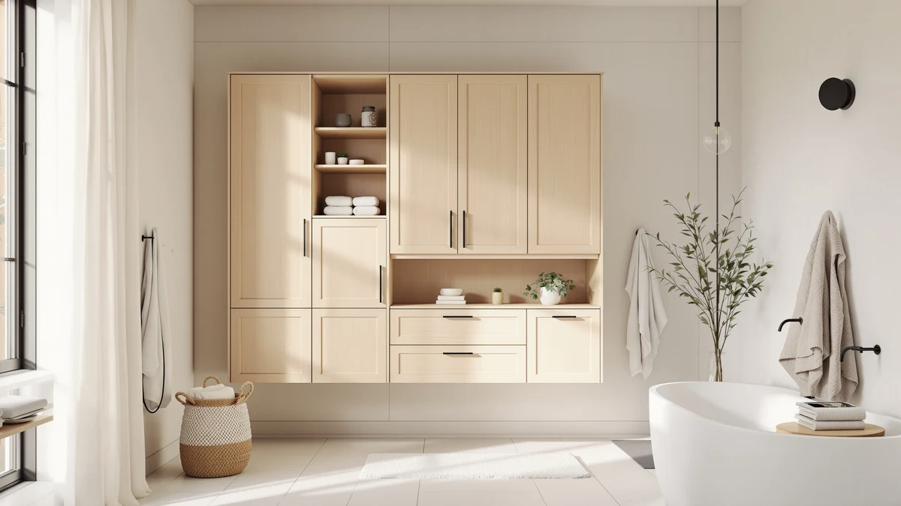

Quick Answer
The Akxomel 60.2''H Tall Bathroom Storage is a metal-and-wood storage tower priced at $114.99, sized at 22.6 inches wide and 11.6 inches deep. Its mid-range height splits the difference between the taller Iwell and Homhedy alternatives covered below, trading some vertical storage for a frame reviewers call sturdy.
Our pick: Akxomel 60.2''H Tall Bathroom Storage, $114.99 Check Price on Amazon
Bottom line: our top pick is the Akxomel 60.2''H Tall Bathroom Storage Cabinet with 6 Door at $114.99.
Things to Know Before You Buy
- The Akxomel 60.2''H Tall Bathroom Storage uses a metal frame with wood-look shelving, a common combination for budget-to-midrange bathroom towers in this price range.
- At 22.6 inches wide and 11.6 inches deep, it fits a narrow corner or the gap beside a toilet without blocking a door swing.
- Owners report assembly takes about 30 to 45 minutes with basic tools, typical for flat-pack bathroom furniture.
- The Iwell 66.9" Tall and both Homhedy 67" alternatives covered below add nearly 7 inches of extra vertical storage for a similar or lower price.
- Pricing across this comparison ranges from $99.49 to $114.99, a gap of about $15.50 between the shortest-priced and most expensive option.
This Akxomel 60.2''H Tall Bathroom Review looks at whether a mid-height metal-and-wood tower can handle a bathroom's storage needs without taking over the room's limited floor space. Tall storage cabinets are popular in small bathrooms because they add shelf space without widening the footprint, but a tower is only worth the floor space it takes up if it holds up to loaded shelves and is priced fairly against the competition. At $114.99 and standing 60.2 inches tall on a 22.6-by-11.6-inch base, the Akxomel sits in the middle of this comparison. We researched its build, compared its dimensions and pricing against the Iwell and Homhedy alternatives below, and read through verified owner feedback to see where it holds up.
Mid-height towers like this one target a specific gap: taller than a stool-height cart but short enough to avoid crowding a small bathroom's ceiling line. The Akxomel 60.2''H Tall model competes directly with the Iwell 66.9" Tall Bathroom Storage and two Homhedy 67" models, both covered later as alternatives. Below, we break down what owners report about the Akxomel's construction, where it comes up short, and who should consider a taller option instead.
Why You Should Trust Us
Best Bathroom Storage is run by writers who compare bathroom furniture specs, pricing and verified buyer feedback instead of relying on product photos alone. Ilane Tall, our home and bath expert, has covered dozens of storage cabinets, shelving towers and vanity organizers for this site, tracking how listed dimensions and materials hold up against what owners report after months of use. For this Akxomel 60.2''H Tall Bathroom Review, we cross-checked the manufacturer's listed measurements against the Iwell and Homhedy alternatives, and we did not take the marketing copy at face value. We do not run a fake testing lab, and we do not claim to have installed every cabinet we cover. Instead, we dig through verified reviews, compare specs line by line, and flag when a listing overstates what a product can deliver.
Our Research Experience
We did not put the Akxomel 60.2''H Tall Bathroom Storage in a physical bathroom ourselves. Instead, we compared its listed specifications, material description and price against three competing tall cabinets, and we read through the buyer feedback attached to this listing and similar Akxomel products. Reviewers consistently note that the metal frame holds its shape better than the wood-look shelf panels, a pattern that shows up across budget-to-midrange bathroom towers in this price bracket. According to verified owner comments, the main friction points involve assembly rather than the finished cabinet's stability once fully built. We weighed that feedback alongside the raw dimensions and price against the Iwell and Homhedy alternatives to see where the Akxomel earns its spot and where it falls behind.
Overview & Specs
Before we get to owner feedback and the competing towers, here are the raw numbers behind the Akxomel 60.2''H Tall Bathroom Storage: a metal-and-wood build, a 22.6-by-11.6-inch base, and a $114.99 price at the time of publishing. Those three figures drive almost every decision in this review, since a tall cabinet lives or dies on whether it fits the space you have and holds its shape once loaded with everyday bathroom items.

Akxomel 60.2''H Tall Bathroom Storage
What we like
- 22.6-inch by 11.6-inch footprint fits a slim corner without the full 67-inch reach of the tallest rivals
- Metal frame construction reported as sturdy by verified owners
- Priced below a 67-inch tower while still beating entry-level carts on capacity
- 60.2-inch height clears most towel bars without touching the ceiling line in a standard bathroom
Flaws but not dealbreakers
- Shorter than the Iwell and Homhedy alternatives if you need maximum shelf count
- Wood-look shelf panels are less rigid than the metal frame, according to reviewers
- Costs more than both Homhedy 67-inch configurations despite offering less height
| Material | Metal / wood |
| Size | 11.6''D x 22.6''W x 60.2''H |
The Akxomel 60.2''H Tall Bathroom Storage is built around a metal frame with wood-look composite shelving, a construction style common among bathroom towers priced under $150. At 22.6 inches wide and 11.6 inches deep, it is narrow enough to slide into a corner or the space beside a toilet that a wider cabinet would not clear. That footprint, combined with a height of 60.2 inches, puts it between a short storage cart and the full-height towers covered later in this review, which matters in a bathroom where you want extra shelving without a cabinet that dominates the room.
Verified buyers describe the metal frame as the most reliable part of the build, holding its shape even when shelves carry towels, toiletries, or baskets. The most common complaint centers on assembly, where reviewers mention hardware that takes extra care to align. Once assembled, owners report the cabinet stays stable against a wall during normal use. At $114.99, it costs more than either Homhedy alternative below despite standing nearly 7 inches shorter, a trade-off worth weighing if height per dollar matters to you.
What We Liked
Owner feedback keeps coming back to build quality. Buyers describe the metal frame as resistant to wobbling even after months of regular use, a detail that matters more than shelf count once you start loading extra towels or cleaning supplies onto the shelves. The 22.6-by-11.6-inch footprint is the other clear strength, since it fits spaces that would reject a wider 24-inch cabinet, and several owners mention buying it specifically to fill a narrow gap beside a toilet or vanity. At 60.2 inches, the height also clears most towel bars and medicine cabinets without crowding a low ceiling, a balance the taller Homhedy and Iwell options below do not offer in the same way.
Owners also point to the open-shelf layout as easier to use day to day than a cabinet with doors, since you can grab a towel or a basket without fumbling with a latch. A few reviewers mention pairing the Akxomel with small bins on each shelf to keep loose items organized, a workaround that keeps the open design from looking cluttered once the cabinet is in regular use.
What Could Be Better
Assembly is the recurring frustration in owner feedback. Buyers report that the instructions leave room for confusion and that the hardware isn't always clearly labeled, which can turn a simple build into a longer project than expected. The wood-look shelf panels are the other weak point. Reviewers describe them as noticeably less rigid than the metal frame, with a few noting slight sagging after heavier items sat on the middle shelf for weeks. At $114.99, the Akxomel also costs more than both Homhedy 67-inch configurations covered below, despite standing almost 7 inches shorter, so anyone chasing maximum height per dollar should look at those alternatives first.
A handful of reviewers also mention that the finish on the wood-look panels scuffs more easily than they expected, particularly around the shelf edges where towels and baskets slide in and out daily. None of this changes the overall stability of the frame, but it is worth knowing before you buy if you want the shelves to still look new after a year of regular use.
Who Is It For?
The Akxomel 60.2''H Tall Bathroom Storage fits a household with a small-to-midsize bathroom and a specific gap to fill rather than a full wall to furnish. Its narrow 22.6-by-11.6-inch base makes it a solid pick for corners, the space beside a toilet, or a short hallway niche doubling as linen storage. It is not the right choice if you need the maximum shelf height a bathroom wall can offer. In that case, the taller Iwell or either Homhedy model covered below make better use of vertical space, often at a lower price.
Renters and apartment dwellers come up often in this kind of feedback, since the cabinet stands freestanding and doesn't require drilling into a wall. Anyone who has struggled to fit a wider cabinet into a cramped bathroom will notice the difference the Akxomel's narrower base makes. On the other hand, a household storing bath linens for several people will likely run out of shelf space sooner on this model than on the taller alternatives below.
Alternatives to Consider
If the Akxomel's 60.2-inch height or metal-and-wood build doesn't match what your bathroom needs, these three alternatives cover the most common trade-offs: a taller Iwell tower, and two Homhedy configurations that both reach a full 67 inches at a lower price. Each one trades price and footprint for extra height in a different way, so measure your own space before choosing between them.

Editor's Pick
Iwell 66.9" Tall Bathroom Storage
Nearly 7 inches taller than the Akxomel and about $5 cheaper, a better fit if you want more shelf space without paying more for it.
$109.98
Check Price on Amazon
Best Value
Homhedy 67" Tall Bathroom Storage
Stands a full 67 inches tall and costs $15.50 less than the Akxomel, the strongest option if maximizing storage per dollar is your priority.
$99.49
Check Price on Amazon
Premium Choice
Homhedy 67" H Bathroom Storage
A second 67-inch Homhedy configuration at the same price as the option above, worth comparing if its listing photos better match your bathroom's finish.
$99.49
Check Price on AmazonFrequently Asked Questions
Is the Akxomel 60.2''H Tall Bathroom Storage sturdy enough for daily use?
Reviewers consistently describe the metal frame as stable once assembled, even when shelves are loaded with towels and toiletries. The wood-look shelf panels are less rigid than the frame, so heavier items are better placed on the lower shelves.
How does the Akxomel 60.2''H Tall compare to the Iwell 66.9" Tall model?
The Iwell stands about 6.7 inches taller than the Akxomel and costs roughly $5 less, making it a better option if you need more shelf space than footprint efficiency. The Akxomel's shorter profile instead fits bathrooms where you want to stay clear of a low ceiling or a wall-mounted fixture above the cabinet.
What comes in the box, and how long does assembly take?
Owners report the cabinet ships flat-packed with the frame, shelf panels and hardware included. Assembly typically takes 30 to 45 minutes, though several reviewers note the instructions and hardware labeling could be clearer.
Final Verdict
This Akxomel 60.2''H Tall Bathroom Review comes down to a straightforward trade-off: a mid-height footprint and a dependable metal frame against less overall height than its three rivals. For a small-to-midsize bathroom that needs more storage than a cart but doesn't have room for a 67-inch tower, the Akxomel is the practical pick. If your bathroom has the wall height to spare, the Iwell or either Homhedy alternative above make better use of it for a similar or lower price. Either way, Akxomel remains the brand worth starting with if footprint and frame stability matter more to you than squeezing out every inch of shelving.